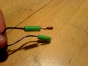
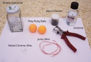
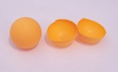
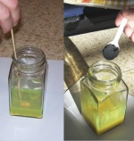
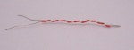
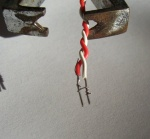
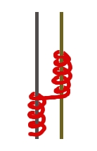
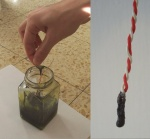

An e-match or electrical igniter is an electrical device used to trigger pyro compounds, and is widely used in professional pyrotechnical displays. It is a much safer alternative to visco fuse, black match, and other types of fuse. It is usually made from two long wires, each attached to a battery terminal, and in the center of the circuit, a filament called a bridge wire is found, usually nichrome or graphite. At a high enough current, the bridge wire will quickly heat up. This heat ignites a pyrogenous compound with which the igniter is encased. They can be easily made, and can be rigged as to be hooked up to an Electrical Firing Box (EFB). Using these igniters allows you to be far away when you want to light off fireworks or other things, and also allows you to light things in a quick sequence, making your fireworks look more professional.
A cheap, good source of ca.4ohms/cm nichrome wire is an wire wound potentiometer of value 2.2Kohms/3Watts. Coated with nitrocellulose-blackpowder prime, an igniter of 2.5mm bridge length pops reliably with 24vdc. In some pots wire is embedded in ceramics, thus unusable. The best are 'AB CTS' brand ww-pots. you can also take a hair dryer apart and un wind the coils into a wire this is nicrome wire and will give a lot of fires because of its thickness but it requires 12 volts to get hot enough to light meal powder and granulated black powder.

| Black powder | ~70% |
| Nitrocellulose lacquer |
~30% |
Tools
You will need a clean glass container, 2-3 good quality ping-pong balls (they can be at any color, in this tutorial the balls are orange, thus making an orange color nitrocellulose lacquer mixture), fine black powder or meal powder, acetone, 50-100 cm length of double jump wire, 10-20 cm length of Nichrome wire, 30 gauge (0.2 mm), and wire cutters.

Preparing the the mixture
Cut 2-3 ping-pong balls in half and place them inside the glass container. Now, pour about 25-50 ml of acetone to the container and either let sit overnight or stir and shake for about half an hour to dissolve the balls into the solution. Acetone evaporates very quickly so you will need to put a lid on the glass jar. When fully dissolved the solution will have the consistency of thin paint. This will produce pyrotechnic grade nitrocellulose lacquer. If the mixture is too thin add another half a ping pong ball and dissolve until it has the right texture. If the mixture is too thick, add more acetone.

After mixing the nitrocellulose lacquer, add about 1/2 a cup of fine black powder or meal powder to the mixture, and mix well until you get a unified mixture. Only add the black powder in small amounts, otherwise you risk adding too much resulting in the nitrocellulose lacquer drying out. Continue adding the black powder until you achieve a thick, but not dry mixture. The mix needs to be sticky enough to attach itself to the wires.

Preparing the wires
Cut a 10-15 cm length double jump wire, and swirl the wires together, leaving 3-5 cm at one side and about 1 cm at the other side un-swirled. Now, expose the wires on both edges. The long exposed side is the one to which the power source is connected, and the shorter one is where the match's head will be. Keep the wires on the match head side parallel to each other (see picture).

Cut a 2-3 cm length of nichrome 30 gauge wire, and swirl it around an exposed wire (in the match head part). Make about 3-4 turns, then move to the next wire and swirl the rest of the nichrome wire on it. Make sure the nichrome closes the circuit in one place only.

A schematic drawing of the match's head. The gray and yellow lines are the exposed jump wires, while the red swirling line is the nichrome wire. Notice that the nichrome wire closes the circuit in one place only.

Dip the ignitor's head in the nitrocellulose lacquer-black powder mixture, so that the mixture covers the head entirely, for about 5-10 seconds. Then hold the ignitor above the mixture for about 1-2 minutes, so any drops of the mixture will drop back into the container. After this period, the mixture on the match's head should be dry enough to let the ignitor dry further on a level surface without ruining the shape of the head. Let the ignitor dry for a day before using it.
The ignitor should still be usable for several months, if stored properly. The e-match should ignite easily with a 6V-12V battery. Notice that small AA batteries tend to drain out quickly.
